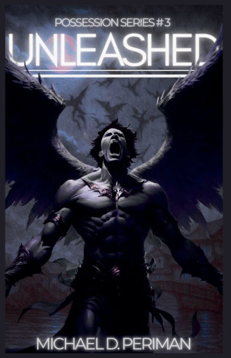
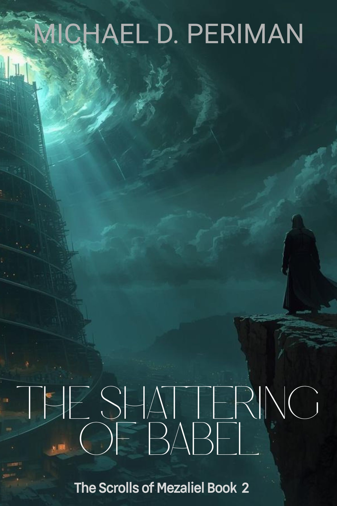

Official Author Website
Christian Fiction Author | Public Speaker
Michael
Periman
Dark-fantasy fiction shaped by faith, theology, and powerful storytelling.
Explore the books, speaking work, and latest releases.
Christian Fiction
Supernatural Suspense
Old Testament Studies
Featured Atmosphere
Biblical imagination, spiritual conflict, and cinematic storytelling.

Official Author Photo
Michael Periman
Books
Current Titles
Slide sideways to see all books




What's Next
Upcoming Titles
Upcoming Release
The Roads We Won’t Take
A dark, atmospheric forthcoming release from Michael Periman.
About
Stories Charged With Atmosphere, Conflict, And Revelation
Michael Periman is a Christian Fiction author and public speaker with a background in theology, teaching, and youth ministry spanning over 35 years. His teaching focuses on Old Testament studies and first-century Judaism, and he is widely known for his captivating ability to engage audiences through dynamic speaking and masterful storytelling.
Outside of writing, Mike enjoys spending time with his family, hunting, woodworking, and of course, teaching. He draws inspiration from extensive reading and listening across many genres, as well as deep study of the Bible and works rooted in Biblical theology and pseudepigraphal writings.
Professional Focus
Christian Fiction Author and Public Speaker
Teaching Background
35+ years in theology, teaching, and youth ministry
Special Interests
Old Testament studies, first-century Judaism, Biblical theology
Michael Periman
Appearances
Speaking, Teaching, And Event Invitations
Michael is available for conferences, church events, teaching series, ministry gatherings, podcasts, and reader conversations centered on theology, faith, and story.
Now Booking
Invite Michael To Speak
With more than 35 years of experience in theology, teaching, and youth ministry, Michael brings clear biblical insight, engaging communication, and memorable storytelling to every appearance.
Topics
Old Testament studies, first-century Judaism, biblical theology, storytelling, and Christian fiction.
Format
Guest speaking, event sessions, panel conversations, reader events, and ministry discussions.
Booking
For inquiries, use the contact section below to discuss dates, event format, and speaking needs.
Contact
Reach Out
For event inquiries, media requests, or general correspondence, use the contact options below.
General Inquiries
For speaking opportunities, media outreach, and reader correspondence.
michaelperiman.author@gmail.com